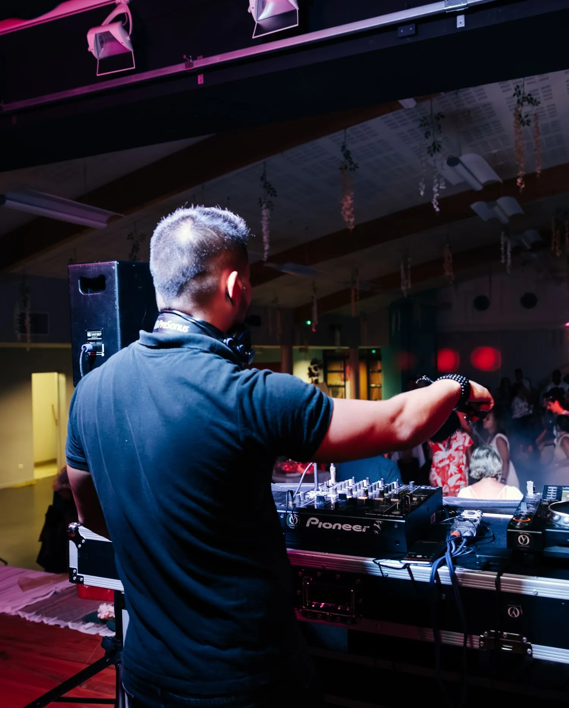

Le grand oui.
MARIAGES
De la cérémonie laïque à la soirée dansante, en passant par le vin d’honneur : un accompagnement musical pour chaque temps fort de votre mariage.
AGENCE DE DJs · TOULOUSE & MONTAUBAN
Une agence de DJs et de solutions musicales pour vos mariages, soirées privées et événements professionnels. Une bande-son qui vous ressemble.
Imaginons votre soirée
01 / VOS ÉVÉNEMENTS
Mariages, soirées privées, événements professionnels ou célébrations : nous créons avec vous une ambiance sur mesure, adaptée à vos envies et à votre public.
MARIAGES
De la cérémonie laïque à la soirée dansante, en passant par le vin d’honneur : un accompagnement musical pour chaque temps fort de votre mariage.
SOIRÉES PRIVÉES
Anniversaires, retrouvailles et célébrations : une sélection personnalisée et un DJ à l’écoute de vos invités pour réunir les générations sur la piste.
ÉVÉNEMENTS PROFESSIONNELS
Une ambiance musicale, une sonorisation et une mise en lumière pensées pour votre événement, votre lieu et votre public.
Nous préparons votre événement avec vous. Selon votre projet, nos prestations peuvent inclure :
Des formules flexibles et personnalisées, adaptées à vos envies, à vos contraintes et à votre budget, pour profiter pleinement de votre événement.
Sonorisation et lumières · Accompagnement musical personnalisé · Formules mariage dès 1 150 €
02 / L’AGENCE BIG BROTHERS
Big Brothers est une agence de DJs et de solutions musicales pour vos événements, à Toulouse, Montauban et dans les environs.
Lauréate des Wedding Awards, notre agence est spécialisée dans l’animation musicale et la création d’ambiances sur mesure. Nos DJs mettent leur savoir-faire, leur expérience et leur énergie au service de votre soirée.
De la sélection musicale à la sonorisation et aux lumières, nous imaginons une prestation à votre image. Notre priorité : une expérience musicale de qualité et des moments dont vos invités se souviendront.
Big Brothers est également le DJ officiel de l’Abbaye Guinguette de Lafrançaise.
Faisons connaissanceUne équipe dynamique, disponible et passionnée, à votre écoute dès la préparation de votre événement.
04 / LES TARIFS MARIAGE
Pour votre mariage, choisissez votre heure de fin et les équipements qui accompagneront votre fête. Pour une soirée privée ou un événement professionnel, nous préparons une proposition sur mesure.
LA SOIRÉE ESSENTIELLE
1 150 €
De l’entrée des mariés jusqu’à 4 h maximum.
3 LED, 2 jeux Evo Quattro LED et 2 Cameo Thunder Wash 100 RGB, avec une structure lumière.
POUR PROLONGER LA FÊTE
1 350 €
De l’entrée des mariés jusqu’à 6 h maximum.
Deux heures de fête en plus, des éclairages mobiles et un équipement de projection. La fumée lourde reste une option distincte.
Un échange avant votre événement permet de préparer le déroulé et de parler de vos goûts. Partagez vos morceaux favoris : ils servent de point de départ à la sélection, qui évolue ensuite selon la piste.
Les deux forfaits commencent à l’entrée des mariés. La cérémonie et le vin d’honneur se réservent en supplément, selon les options choisies.
Indiquez la date, le lieu, le nombre approximatif d’invités, la formule et les options souhaitées. Pensez aussi à préciser les contraintes horaires du lieu.
05 / ON SE RENCONTRE ?
Parlez-nous de votre événement, de votre lieu et de l’ambiance que vous imaginez. Nous définirons ensemble la prestation et le devis.
06 98 96 46 79djbigbrothers.music@gmail.com